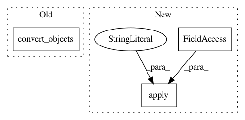

54f90e12d61220fd70905b9c7c1ca2739ac32b4d,nilmtk/stats/goodsectionsresults.py,GoodSectionsResults,export_to_cache,#GoodSectionsResults#,123
Before Change
"section_start": convert_none_to_nat(section.start),
"section_end": convert_none_to_nat(section.end)})
df = pd.DataFrame(data_for_cache, index=index_for_cache)
return df.convert_objects()
After Change
"section_start": convert_none_to_nat(section.start),
"section_end": convert_none_to_nat(section.end)})
df = pd.DataFrame(data_for_cache, index=index_for_cache)
return df.apply(pd.to_numeric, errors="ignore")
In pattern: SUPERPATTERN
Frequency: 4
Non-data size: 3
Instances
Project Name: nilmtk/nilmtk
Commit Name: 54f90e12d61220fd70905b9c7c1ca2739ac32b4d
Time: 2018-03-18
Author: 10246101+PMeira@users.noreply.github.com
File Name: nilmtk/stats/goodsectionsresults.py
Class Name: GoodSectionsResults
Method Name: export_to_cache
Project Name: nilmtk/nilmtk
Commit Name: 8f166d148df4bf9b5f06caefad7b5e01c1bdd85b
Time: 2018-03-19
Author: 10246101+PMeira@users.noreply.github.com
File Name: nilmtk/dataset_converters/iawe/convert_iawe.py
Class Name:
Method Name: convert_iawe
Project Name: nilmtk/nilmtk
Commit Name: 8f166d148df4bf9b5f06caefad7b5e01c1bdd85b
Time: 2018-03-19
Author: 10246101+PMeira@users.noreply.github.com
File Name: nilmtk/stats/totalenergyresults.py
Class Name: TotalEnergyResults
Method Name: export_to_cache
Project Name: nilmtk/nilmtk
Commit Name: 8f166d148df4bf9b5f06caefad7b5e01c1bdd85b
Time: 2018-03-19
Author: 10246101+PMeira@users.noreply.github.com
File Name: nilmtk/dataset_converters/ampds/convert_ampds.py
Class Name:
Method Name: convert_ampds